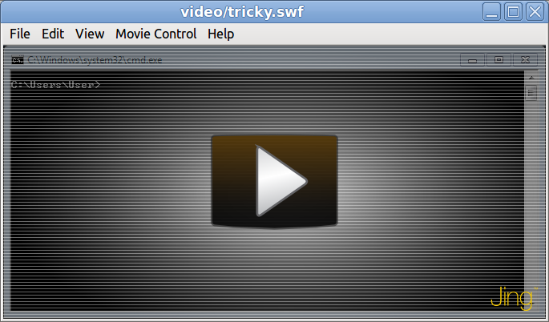
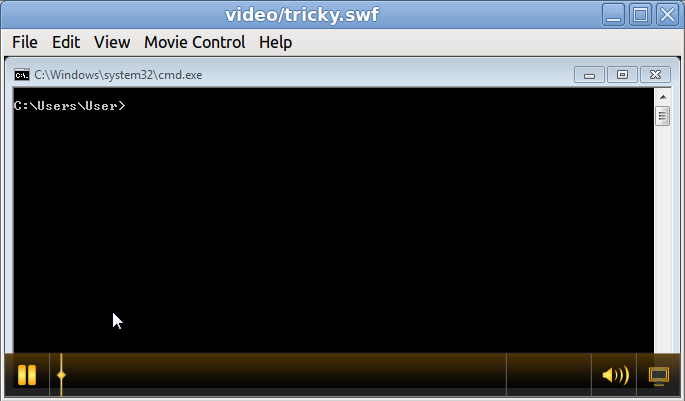
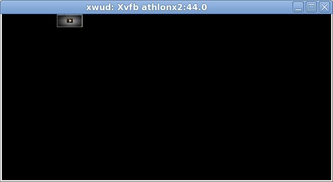

Когда-то Adobe Flash был очень распространен. И он до сих пор используется, хотя популярные сервисы официально "похоронили" его. Тем не менее, Adobe Flash - это больше, чем видео и анимация. Flash-ролик - это программа, которая выполняется внутри flash-плеера, а иногда сама содержит плеер. Вроде бы можно все это программировать с использованием языка ActionScript...
Как-то раз на работе мне пришлось выполнять задачу по расследованию таинственной ошибки в корпоративном приложении. Обнаружил ошибку и сообщил о ней пользователь. И не просто написал отчет, а приложил к нему видеоролик, в котором ее продемонстрировал. Это было круто. Расстраивал только формат видео - SWF. Да, можно смотреть его в браузере (не забыв предварительно активировать соответствующий плагин) или в самостоятельном плеере (например, GNU Gnash). Но возможности этих плееров ограничены по сравнению с "обычными", такими как VLC. Например, в VLC можно перематывать видео на 10 секунд назад/вперед и выполнять множество других действий, без которых изучение содержания видеоролика весьма затруднительно (тем более, что все можно проделывать с помощью "горячих" клавиш).
Преобразовать SWF в MP4 можно без особых усилий, достаточно лишь прочитать ответ на вопрос Convert compressed swf to mp4. Но не все так безоблачно. Рассмотрим простой SWF-файл. "Простой" в данном случае означает, что в файле нет ничего, кроме видео. Т.е. достаточно запустить его в Gnash такой командой:
$ gnash simple.swf
И ролик сразу начнет проигрываться (в "простом" ролике - реклама приставки Nintendo; взят он с сайта,
на котором много тестовых роликов: samples.mplayerhq.hu).
Интересно, что после того, как ролик дойдет до конца (появится логотип компании), ролик будет раз за разом
проигрываться с самого начала. Чтобы предотвратить этот побочный эффект (непонятно, то ли это SWF-файл
"косячный", то ли это особенность Gnash), достаточно добавить параметр --once, т.е.:
$ gnash --once simple.swf
Как бы то ни было, можно без лишних подготовок задействовать утилиту dump-gnash и получить на выходе RAW-видео, которое затем можно преобразовать в MP4.
Но есть и нетривиальные SWF-файлы. Свой "сложный" ролик я записал с помощью программы
Jing (видео, записанные с помощью Jing, довольно
распространены на популярном сайте screencast.com). В чем же
сложность этого SWF-файла? В том, что это не просто видео, это видео и плеер в одном флаконе. Так, если
открыть файл в Gnash ($ gnash tricky.swf), то появится затененный кадр с кнопкой
Play, как показано на рисунке 1.

Очевидно, что преобразовать такой файл в MP4 способом, указанным выше, не получится. Потому что для начала реального проигрывания видео необходимо щелкнуть по затененному кадру левой клавишей мыши (пункт меню Movie Control → Play в Gnash не помогает, равно как и всевозможные параметры командной строки). Без щелчка видео будет бесконечно "висеть" на одном кадре. А соответствующий RAW-файл разрастется до невероятных размеров (собственно, я это сразу заметил, потому что мой рабочий компьютер завис: я же писал RAW-файл в /tmp, а каталог /tmp был смонтирован как tmpfs).
Щелкнем по кнопке Play. Ничего удивительного: мы видим, что в SWF-файле есть свой плеер со своими собственными элементами управления (см. рисунок 2).

Деваться некуда, придеться делать костыли...
Поступим просто: будем открывать ролик в Gnash на отдельном виртуальном экране, щелкать по затененной области посредством xdotool и записывать происходящее с помощью FFmpeg. Впрочем, об этом подходе Rafał Malinowski уже рассказал в статье Recording headless selenium tests to mp4 with Xvfb and ffmpeg. Так что добавим лишь парочку деталей.
Перво-наперво, узнаем действительные размеры видео. Для этого воспользуемся программой swfdump из пакета SWFTools:
$ swfdump --width --height tricky.swf -X 677 -Y 342
Также есть смысл заранее узнать, с какой скоростью проигрывается оригинальный ролик: нет смысла записывать на скорости 60 FPS, когда оригинальный ролик проигрывается на скорости 10 FPS:
$ swfdump --rate tricky.swf -r 10.00
Пожалуй, самая полезная опция Gnash - это --fullscreen. Она позволяет растянуть
картинку на весь экран, при этом рамка окна и панель меню не отображаются. К сожалению, на деле все плохо.
Посмотрим на рисунок 3 и увидим, что применение --fullscreen в
сочетании с Xvfb приводит к плачевному результату: окно Gnash отображается в виде
крошечного прямоугольника.
--fullscreen

При этом в случае с "настоящим" экраном проблема не наблюдается. Так что придеться задействовать параметры
--hide-menubar, --x-pos и --y-pos (будут установлены в нoль). А также
--width и --height (очевидно, они будут равны уже известной ширине и высоте
изображения в исходном файле).
Здесь, правда, не все так радужно. Потому что скрытие строки меню и явное указание размеров изображения не отменяет наличия рамки вокруг окна Gnash (как и любого другого приложения, работающего в среде X). К счастью, виртуальный экран запускается с параметрами по умолчанию, которые настроены на "безрамочное" отображение окон. По крайней мере, в дистрибутиве LinuxMint 17.1 Cinnamon. Хотя в других дистрибутивах эти умолчания могут быть другими.
Следующая задача - это щелчок мышью по упомянутой выше кнопке Play. Щелкать именно по кнопке не обязательно. Щелчка по любой точке затенной области достаточно для того, чтобы воспроизведение видео реально началось. xdotool позволяет делать такие вещи в два счета: переместить курсор в нужную позицию и сымитировать щелчок левой клавишей. Указатель мыши, конечно же, нужно спрятать. Тем более, что в моем случае он имеет вид крестика (замечательные умолчания снова в действии), и он довольно заметен. Призовем на помощь утилиту Unclutter (официальный сайт не удалось найти, так что даю ссылку на ArchWiki). Сокрытие достигается путем установки времени бездействия в ноль, т.е. курсор тут же прячется, не успев появиться.
С Unclutter есть небольшой нюанс. Так, в LinuxMint 17.1 Cinnamon (скорее всего, в
Ubuntu тоже) после установки Unclutter ($ sudo apt-get install unclutter) и
последующего перезапуска X-сервера (например, после выключения компьютера) курсор мыши постоянно пропадает с
экрана после пятисекундного бездействия. Оказывается, автоматический запуск Unclutter настроен по
умолчанию. Взглянем на соответствующий файл настроек /etc/default/unclutter:
# /etc/default/unclutter - configuration file for unclutter # Set this option to 'true' if you want to start unclutter # automagically after X has been started for a user. # Otherwise, set it to 'false'. START_UNCLUTTER="true" ...
С ним все ясно: просто меняем true на false.
В целом алгоритм выглядит так:
Очевидно, что после запуска Xvfb нужно немного подождать, прежде чем запускать Gnash. А перед тем, как начинать захват видео с виртуального экрана, нужно, в свою очередь, подождать, пока Gnash полность проинициализируется. В принципе, ждать готовности Xvfb нет необходимости: можно просто "пинговать" виртуальный экран каждую секунду. Но в случае с Gnash подобный трюк не пройдет: Gnash никак не сообщает о своей готовности к работе (наличие соответствующего PID'а в списке процессов - не в счет, потому что PID может присутствовать, но программа может быть еще не готова к выполненю работы). Так что просто подождем. Я жду десять секунд, чтобы уж наверняка не было глюков. Возможно, пяти секунд будет достаточно...
Вышеописанный алгоритм реализован на Python. Получилось то, что получилось :) Запустим скрипт:
$ ./swf-to-mp4.py ../video/tricky.swf /tmp/tricky.mp4
tricky.mp4 - это и есть результат преобразования (76 КБайт всего лишь).
Побочные эффекты:
И наконец, самый большой недостаток - это звук. В моем случае звук был не нужен: его не было в оригинальном ролике. Но в реальности звук может понадобиться. Как в этом случае его записывать? Проделать ли некоторые трюки с PulseAudio/AlsaMixer/etc? Или задействовать вторую звуковую карту (USB, например)? Или отдельно записать видео, отдельно - звук, а затем свести их воедино? Или вообще декомпилировать SWF-файл, убрать все ненужное, вытянуть звук и т.д.? Непонятно...